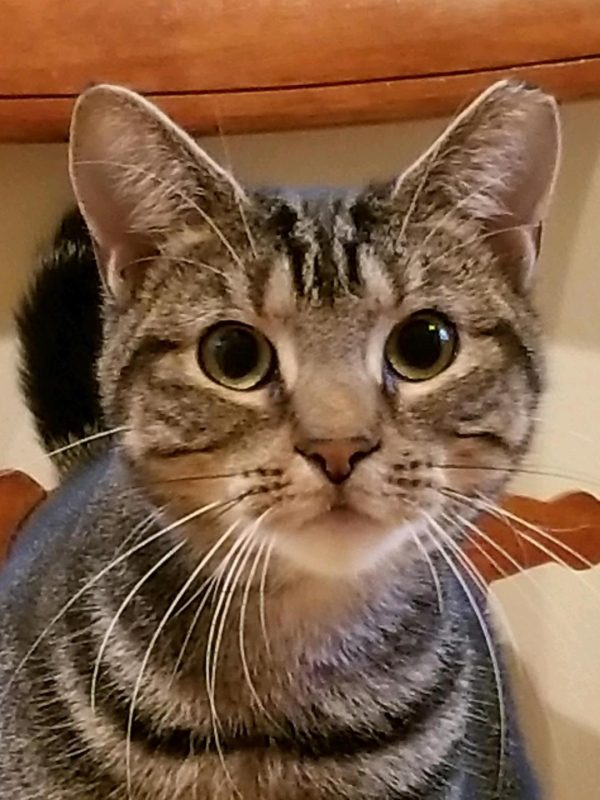
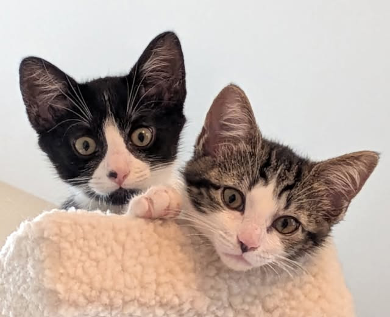
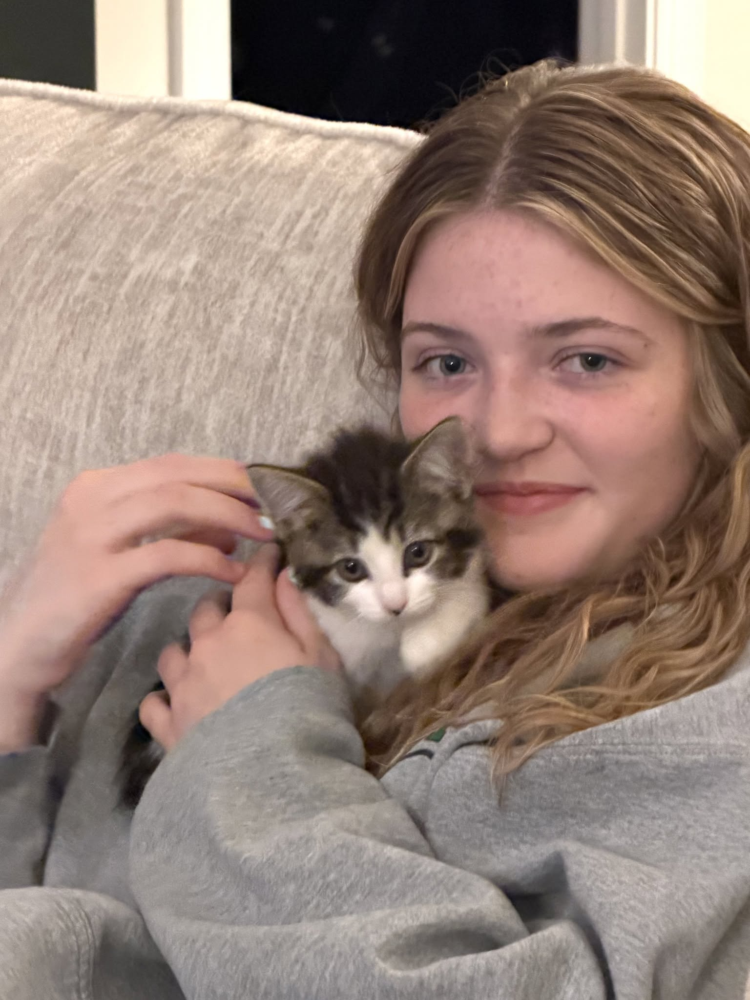

A FOREVER Home for Every Cat
Feline Guardianship Begins with You
Be a Part of a Caring Community. Make Dreams Come True
ADOPT
Be a Part of a Caring Community. Make Dreams Come True

Every Dollar Counts
Please DONATE and Support CatsRUs
Please DONATE and Support CatsRUs
Consider Supporting our Life Saving Programs
SUPPORT

Become a Volunteer
Volunteer at our Shelter, at Events,
or Remotely by Performing Administrative Tasks
VOLUNTEER
or Remotely by Performing Administrative Tasks